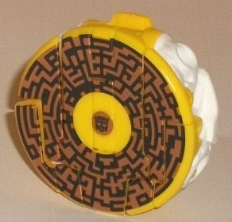
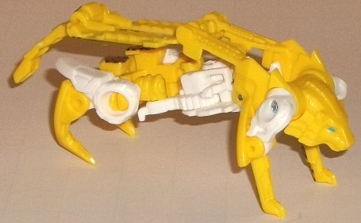
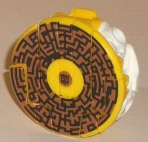
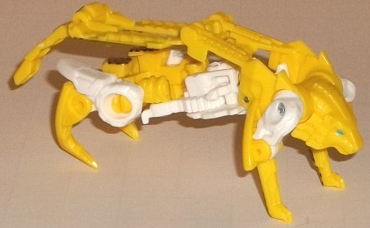
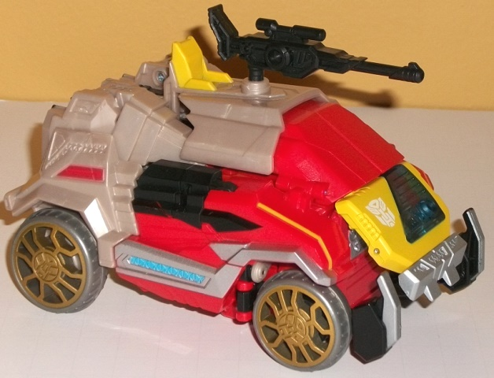
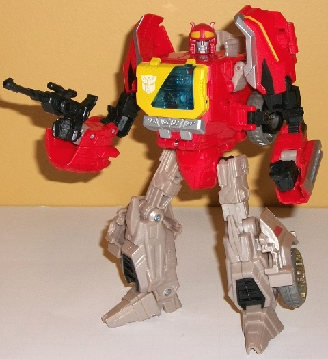

 
Allegiance : Autobot
Difficulty of Transformation : Very Easy
Color Scheme : Yellow, white, and some sky blue, metallic copper, and black
Individual Rating : 5.3
(NOTE: Because this set is a repaint, this
is not a full-blown review. This mainly covers any changes made to the
set and the color scheme, and merely compares it to FoC Soundwave &
Ravage. For a review on the Blaster mold itself, read the review of FoC
Soundwave w/ Laserbeak
here
. For a review
on the Steeljaw mold, read the review of FoC Ravage
here
.)
 Steeljaw
Steeljaw


Allegiance
: Autobot
Difficulty of Transformation
: Very
Easy
Color Scheme
: Yellow, white, and
some sky blue, metallic copper, and black
Individual Rating
: 5.3
Steeljaw is a re-use
of the FoC Ravage mold, and if you've read my review on that mold, you'll
know that I'm not fond of it-- to say the least. The data disc mode is
good enough, but the beast mode.... uggh. If you've been reading my reviews
for a while, you've probably also picked up on the fact that yellow is
one of my least favorite colors. So, Steeljaw here is a yellow redeco of
what is, in my opinion, the worst of the FoC data disc molds. You can thus
imagine how much I like him. This said, at least there's a bit of white
in Steeljaw's lion mode to give a bit more color contrast to him than Ravage
has. The metallic copper "circuitry lines" on the top of the data disc
mode also look quite good, particularly against the black background--
however, this is pretty much Steeljaw's only real significant positive.
Steeljaw does have a
mold change-- the beast mode head has been changed, from Ravage's fierce,
overly tech-y panther head to a calmer-looking lion head to fit Steeljaw's
G1
beast mode
. However, this does raise another problem, namely that Steeljaw's
beast mode isn't nearly husky enough for a lion. Still, the new headsculpt
isn't as "overly tech-ed up" with detail, and generally looks better than
FoC Ravage's.
 Autobot
Blaster
Autobot
Blaster


Allegiance
: Autobot
Size
: Voyager
Difficulty of Transformation
: Medium
Color Scheme
: Red, light milky brownish
gray, and some black, silver, yellow, moderately light gray, pale metallic
gold, transparent blue, and light sky blue
Individual Rating
: 8.9
It seems like just about
every major Soundwave mold has been retooled into Blaster, and the FoC
version is no exception. For the changed color scheme, I have good and
bad things to say about it. The good is that the red used for most of Blaster's
top (or front) half is a primary, but quite eye-catching shade of red on
this toy, and the contrast against it of black plastic and some yellow
bits really helps make it look visually interesting. The silver on the
sides also looks neat, with the sky blue in the middle of part of these
silver stripes looking particularly sharp and contrasting well with the
red. There's also a bit of gold on the wheels, too, which fits in thematically
with Blaster's yellow. However, the back (or bottom) half of the toy is
made up of a quite ugly shade of light milky brownish gray. Now, gray itself
is a fairly dull color, I understand, and I understand why Hasbro would
want to spice up this portion of Blaster's traditional color scheme a bit--
however, this was NOT the way to do it. It's a color shade that looks eternally
dirty or faded, like it's a lot older than it actually is. A straight gray
may not have broken the bank in terms of "wow" factor, but it would've
looked better than this.
Blaster has some mold
changes, and it goes beyond his headsculpt (which is crisply detailed,
modeled after his G1 cartoon appearance, well-detailed in the paint department,
and generally awesome). His chest has also been remolded to resemble the
original G1 toy's chest, and the slanted transparent blue against the yellow
looks pretty sharp and helps to differentiate him from Soundwave more.
The flatter, less "sharp" look of the angles makes his vehicle mode look
a bit "friendlier" as well, though the claw bits at the sides of the front
of the vehicle mode are still present. Blaster also has a different weapon,
exchanging Soundwave's shoulder-gun for a more "normal" gun that's based
off of his G1 toy. Also, in a completely unnecessary (but appreciated)
twist, the wheels have been remolded as well, this time with stylized pale
gold Autobot symbols on the spokes.
FoC Blaster is a great
mold with a level of remolding that I'm appreciate of, making it less look
like the third use of this mold within just a few months. The mold works
surprisingly well for Blaster with these modifications, and his color scheme
is generally okay-- except for the hideous shade of dirty brownish gray
that makes up the back/bottom half of the toy. I don't quite know what
Hasbro was thinking with that. Add this with the fact that Steeljaw has
a color scheme I don't like on the weakest mold of the FoC data disc toys,
and I'd recommend this set the least out of the FoC voyager "cassette-player"
toys. Still, if you want a Blaster to deploy all your Autobot data disc
bots, it's not like there's another choice for you-- I'd just make Soundwave
or
Soundblaster
a higher priority.
Reviews by Beastbot